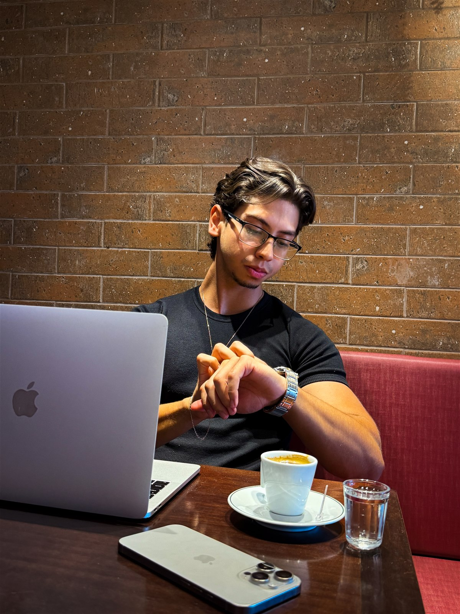
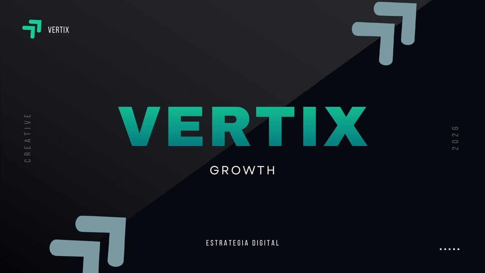
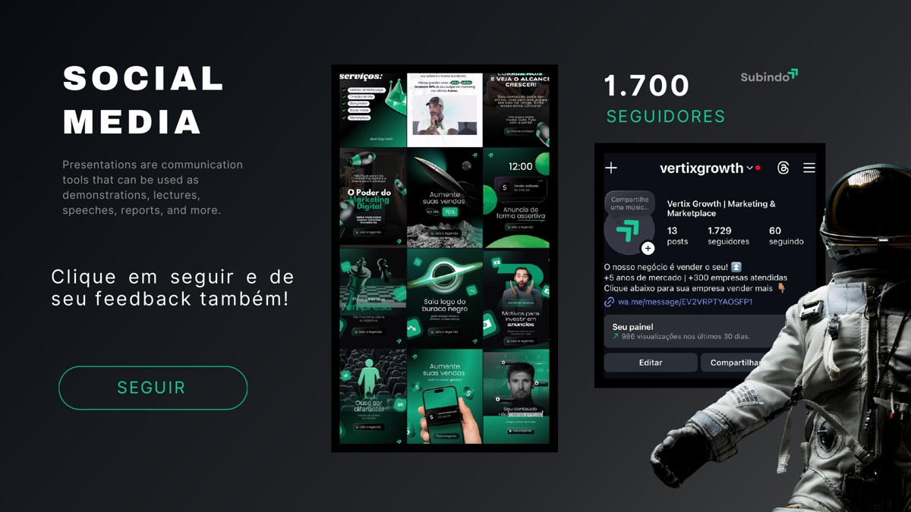
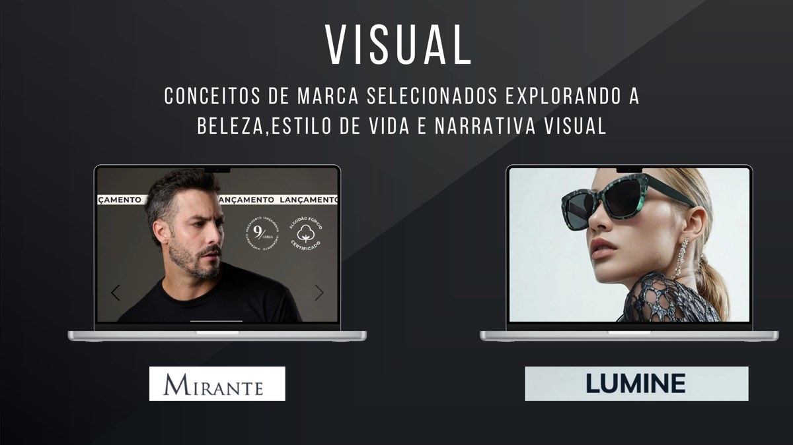

Entro como braço audiovisual da equipe, transformando estratégia em conteúdo bem dirigido e preparado para gerar resultados.
Construção estética de performance: linhas, detalhes, movimento e presença premium em torno do Porsche cinza.
Da vista aérea ao café, dos perfumes árabes aos iPhones, MacBooks, iPads e Apple Watch. Um vídeo para vender experiência, estrutura e atendimento.
Captação e edição para apresentar produto, preparo e oferta com ritmo rápido, textura e forte apelo de consumo.
Reabertura da pista, self-service, açaís, sorvetes, mais de 50 acompanhamentos e cupuaçu cremoso.
Captação sensorial para comunicar cuidado, técnica e atmosfera em uma experiência de bem-estar.
Captação dinâmica para comunicar estrutura, intensidade e energia em uma experiência de treino.
Conteúdo para apresentar atendimento, técnica, acabamento e a experiência completa dentro da barbearia.
Narrativa visual para apresentar arquitetura, ambientes e estilo de vida com movimento, amplitude e percepção de valor.
Clientes
Nossos clientes.
Sobre a Adler
O seu negócio primeiro.
A câmera depois.

A Adler Creates nasceu da união entre vendas, marketing e audiovisual. Criei a produtora porque empresas não precisam apenas de alguém que saiba gravar. Precisam de um parceiro que entenda o negócio antes de ligar a câmera.
Sou Guilherme Adler. Em cada projeto, penso junto com a empresa: o que precisa ser comunicado, como a marca deve ser percebida e qual narrativa pode transformar atenção em confiança, reconhecimento e oportunidades reais.
Conduzo o projeto de ponta a ponta: entendimento, roteiro, captação, edição e entrega.
Intencionalidade em cada enquadramento, relação transparente e estética sempre a serviço do resultado.
Vídeo bonito chama atenção.
Vídeo pensado constrói confiança.
A mensagem certa.
Da forma certa.
No momento certo.
Kairos é o método da Adler Creates para transformar estratégia em conteúdo com intenção, direção e presença.
Antes de gravar, entendemos o que a marca precisa comunicar. Depois, construímos a forma mais forte de fazer essa mensagem ser percebida.
Entender o processo
Clareza antes da câmera
Direção em cada escolha
Conteúdo com função
Processo
Como o Kairos funciona.
Quatro momentos organizam o projeto do primeiro alinhamento até a presença da marca no mundo.
Clareza
Entendemos negócio, público, objetivo e diferenciais para definir o que precisa ser percebido.
Diagnóstico · IntençãoDireção
Transformamos a estratégia em mensagem, roteiro, cenas e preparação para a captação.
Narrativa · PreparaçãoProdução
Conduzimos pessoas, produto e ambiente para construir imagens naturais, fortes e coerentes.
Captação · DireçãoPresença
Edição, cor, som e ritmo transformam o material em conteúdo pronto para cumprir sua função.
Construção · Ativação
O resultado
Menos conteúdo produzido por obrigação.
Mais presença construída com intenção.
Serviços
O que a gente produz.
01
02
03
04
05
06
Vídeo institucional
O vídeo que apresenta a empresa inteira: quem ela é, o que faz e como trabalha. Roteiro, captação, edição e entrega. Serve para o site, apresentações comerciais, feiras e recepções.
Cobertura de eventos
Congressos, feiras, convenções, inaugurações e treinamentos. Cobrimos o dia inteiro, e você recebe o filme do evento e os cortes prontos para as redes sociais.
Vídeo imobiliário
Tour de imóvel, lançamento de empreendimento e captação aérea com drone. Também produzimos treinamentos em vídeo para a equipe comercial, ajudando o corretor a gravar melhor no dia a dia.
Vídeo com IA
Para o que não dá para filmar: cenas impossíveis, produtos que ainda não existem, animações e motion design. A IA entra como recurso quando resolve melhor do que a câmera.
Edição
Você já tem o material e ele está parado no cartão. A gente assume o corte, a legenda, a cor e a trilha. Entrega por link, no prazo combinado.
Oferta principal
Recorrente para redes
Captação periódica na sua empresa, com material editado para as redes ao longo do mês. Para quem precisa manter presença sem depender de ter uma ideia nova toda semana.
Quero planejar meu mês de conteúdoSócio · Vertix Growth
Não é só conteúdo.
É crescimento com direção.
Hoje, além de liderar a Adler Creates, sou sócio da Vertix Growth. Essa união coloca produção audiovisual, estratégia e visão de negócio na mesma mesa.
O nosso negócio é vender o seu.
A Adler constrói a mensagem, a narrativa e a imagem. A Vertix conecta esse conteúdo ao posicionamento e à estratégia necessária para transformar atenção em oportunidade.
Audiovisual que prende a atenção
Conteúdo pensado para interromper o automático, apresentar valor e fazer a marca ser percebida.
Estratégia que direciona
Comunicação alinhada ao posicionamento, ao público e ao objetivo comercial da empresa.
Crescimento que evolui
Uma presença que deixa de publicar por obrigação e passa a aprender, ajustar e vender com mais consistência.



+2anos de mercado
+100empresas atendidas
1frente integrada de audiovisual e estratégia
Dúvidas
Algumas dúvidas.
O que você precisa saber antes de tirar o projeto do papel.
Quais regiões vocês atendem?
Piracicaba, Campinas e toda a região. O deslocamento entra na proposta como valor fechado: você vê antes, não depois.
Qual é o prazo de entrega?
Entregamos com rapidez: os materiais ficam prontos em até 7 dias úteis, ou no prazo que combinarmos para o seu projeto.
Preciso chegar com o roteiro pronto?
Não precisa. Entramos como parceiros desde a ideia e ajudamos a definir o roteiro, o formato e o que faz sentido mostrar para o seu público. Se você já tem um roteiro, trabalhamos juntos a partir dele.
Como funciona o pagamento?
50% para reservar a data no calendário e 50% na entrega.
Contato
Chega de conteúdo que só preenche o feed.
Sua empresa precisa ser percebida, lembrada e escolhida. Conte o que você quer construir e vamos transformar isso em uma produção com estratégia, direção e intenção de venda.
Enquanto você adia, outra marca ocupa a atenção do seu cliente.